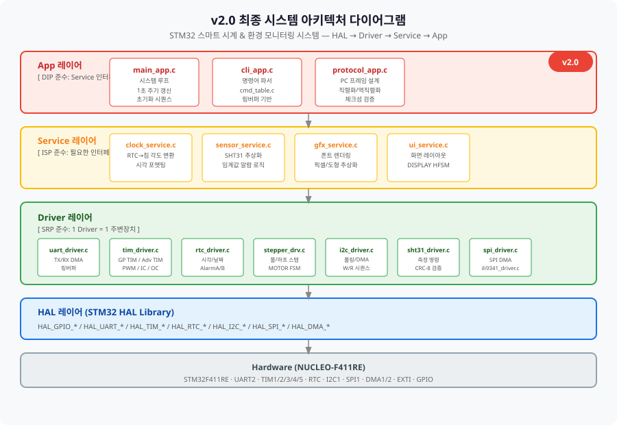
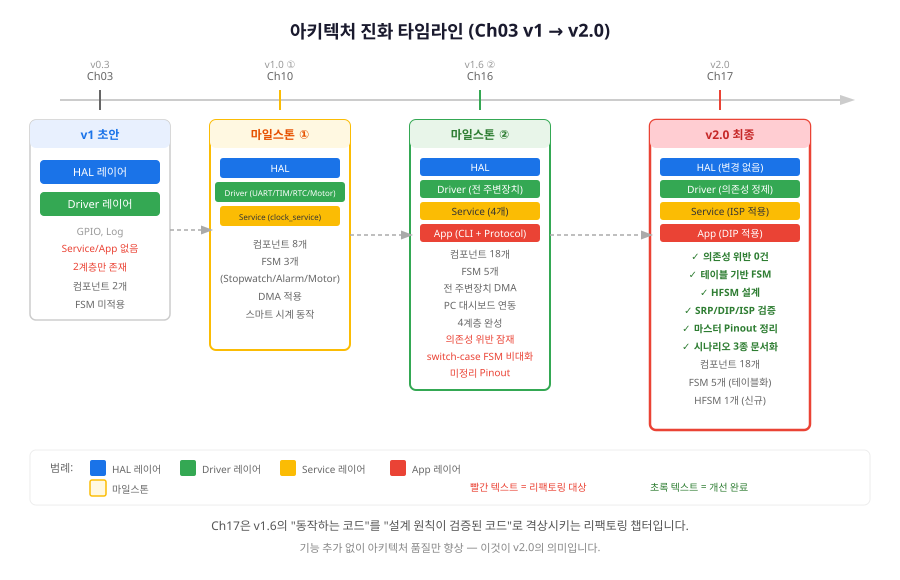
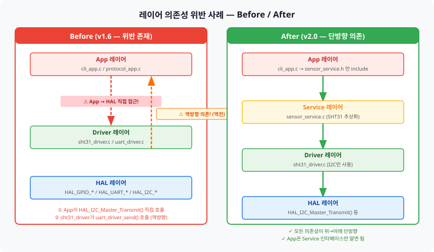
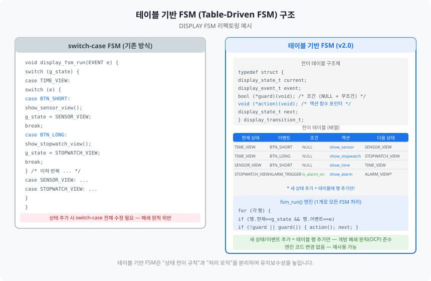
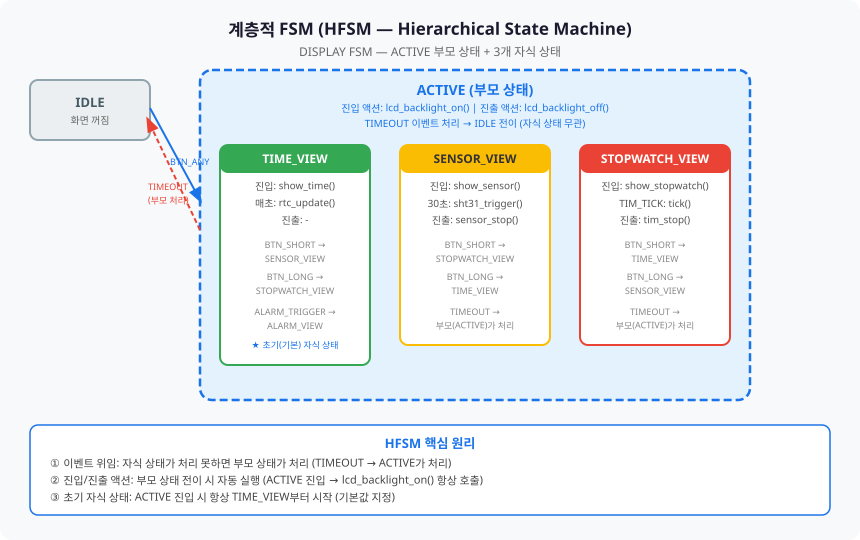
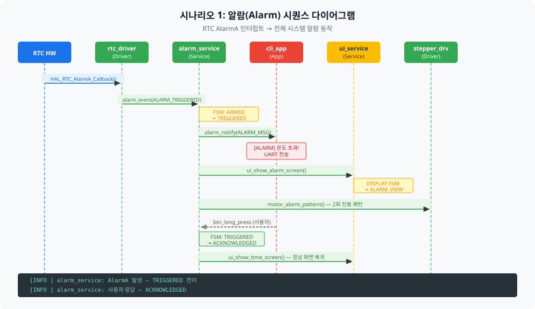
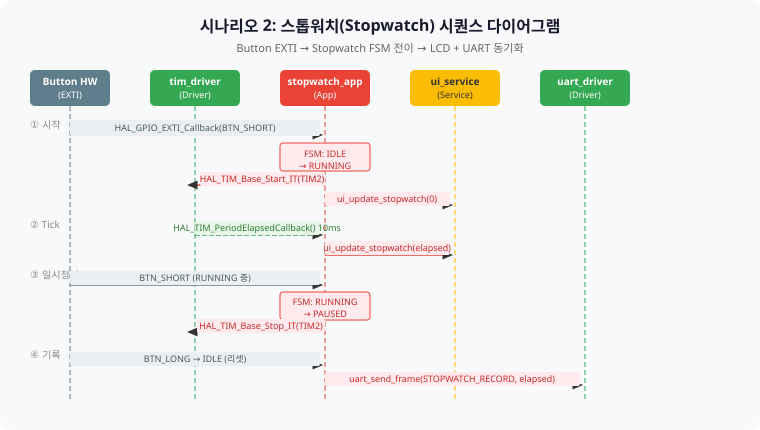
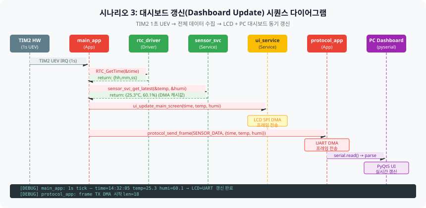

Ch01~Ch16에서 직접 만든 코드를 아키텍처 전문가 관점으로 리뷰하고, 테이블 기반 FSM·계층적 FSM으로 재설계하여 설계 원칙이 검증된 v2.0으로 완성합니다.
Ch17은 기능을 추가하는 챕터가 아닙니다. Ch01~Ch16에서 쌓아온 4계층 아키텍처(HAL → Driver → Service → App)를 아키텍처 정합성 관점으로 재검토하고, 발견된 설계 결함을 수정하는 리팩토링 챕터입니다. 최종 결과물인 v2.0은 동일한 기능을 더 나은 설계로 실현합니다.

여러분은 Ch01부터 Ch16까지 74시간의 코딩으로 스마트 시계 전체 시스템을 완성했습니다. 이제 그 코드를 처음 설계한 아키텍트의 눈으로 다시 바라볼 시간입니다.
이 챕터를 완료하면 다음을 할 수 있습니다.
Ch03에서 레이어드 아키텍처(Layered Architecture)를 처음 설계했을 때, 우리의 초안은 두 개의 레이어만 가지고 있었습니다. HAL 레이어와 그 위에 GPIO/Log 드라이버만 있는 초보적인 구조였죠. 그로부터 14개 챕터를 거쳐 이제는 4계층에 18개 컴포넌트가 있는 시스템이 되었습니다. 이 여정을 전체적으로 되돌아보는 것이 1절의 목표입니다.

타임라인을 보면 아키텍처가 단순히 컴포넌트 수만 늘어난 게 아닙니다. 레이어가 하나씩 추가되는 패턴을 확인할 수 있습니다.
v2.0이 v1.6과 다른 점은 딱 하나입니다. 기능의 추가가 아닌 아키텍처 품질의 향상입니다. 같은 동작을 하지만 코드가 더 읽기 쉽고, 수정하기 쉽고, 확장하기 쉬운 상태가 됩니다. 이것이 "동작하는 소프트웨어(Working Software)"에서 "좋은 소프트웨어(Good Software)"로 가는 길입니다.
14개 챕터를 거치며 코드를 추가하다 보면, 의도치 않게 레이어 경계를 넘는 코드가 생겨납니다. 특히 빠른 구현이 필요할 때 "일단 동작하게 만들고" 나중에 정리하려다 그대로 남는 경우가 많습니다. 2절에서는 우리 프로젝트에서 발생할 수 있는 대표적인 의존성 위반 패턴과 수정 방법을 살펴봅니다.

문제 상황: cli_app.c에서 온도 알람을 처리하면서
HAL_I2C_Master_Transmit()을 직접 호출하는 코드가 있다고 가정합시다.
App 레이어에서 HAL 레이어로 2계층을 건너뛰는 직접 접근은 레이어드 아키텍처의 핵심 원칙인
단방향 단계적 의존을 위반합니다.
/* ❌ 위반 코드 — cli_app.c */
/* App이 HAL을 직접 호출: 계층 위반 */
void cmd_sensor_read(void)
{
uint8_t buf[6];
/* HAL을 직접 호출하면 테스트, 교체, 이식이 어려워짐 */
HAL_I2C_Master_Transmit(&hi2c1, SHT31_ADDR, cmd, 2, 100);
HAL_I2C_Master_Receive(&hi2c1, SHT31_ADDR, buf, 6, 100);
/* ... */
}
/* ✅ 수정 코드 — cli_app.c (v2.0) */
/* App은 Service 인터페이스만 호출 (DIP 준수) */
void cmd_sensor_read(void)
{
float temp, humi;
/* sensor_service.h의 인터페이스만 사용 */
HAL_StatusTypeDef ret = sensor_svc_get_latest(&temp, &humi);
if (ret != HAL_OK) {
LOG_E("cmd_sensor_read: 센서 읽기 실패");
return;
}
LOG_I("cmd_sensor_read: 온도=%.1f°C, 습도=%.1f%%", temp, humi);
}
문제 상황: sht31_driver.c에서 온도 이상 감지 시
uart_driver_send()를 직접 호출하는 코드.
Driver 레이어끼리의 횡방향(Horizontal) 의존은 순환 의존(Circular Dependency)을 유발할 수 있습니다.
/* ❌ 위반 코드 — sht31_driver.c */
/* Driver가 다른 Driver를 직접 호출 (횡방향 의존) */
void sht31_process_data(float temp, float humi)
{
if (temp > 30.0f) {
/* sht31_driver가 uart_driver를 알면 안 됨! */
uart_driver_send("TEMP_HIGH\r\n", 10);
}
}
/* ✅ 수정 코드 — sht31_driver.c (v2.0) */
/* Driver는 콜백(Callback)으로 상위 레이어에 알림 */
static sht31_alarm_cb_t g_alarm_cb = NULL;
void sht31_register_alarm_cb(sht31_alarm_cb_t cb)
{
g_alarm_cb = cb;
}
void sht31_process_data(float temp, float humi)
{
LOG_D("sht31_process_data: 온도=%.1f, 습도=%.1f", temp, humi);
if (temp > 30.0f && g_alarm_cb != NULL) {
LOG_W("sht31_process_data: 온도 임계값 초과 → 알람 콜백 호출");
g_alarm_cb(SHT31_ALARM_TEMP_HIGH, temp);
}
}Ch13에서 DISPLAY FSM을 처음 만들 때는 switch-case 방식을 사용했습니다. TIME_VIEW, SENSOR_VIEW, STOPWATCH_VIEW 세 상태를 중첩된 switch-case로 구현했는데, ch17에서는 ALARM_VIEW라는 새 상태를 추가해야 합니다. switch-case 방식이라면 기존 switch 블록 전체를 수정해야 하지만, 테이블 기반 FSM(Table-Driven FSM)에서는 테이블에 행 몇 줄만 추가하면 됩니다.

/* ch17_table_fsm.h — 전이 테이블 한 행(Row) */
typedef struct {
display_state_t current_state; /* 현재 상태 */
display_event_t event; /* 이벤트 */
bool (*guard)(void); /* 조건 함수 (NULL = 무조건 전이) */
void (*action)(void); /* 액션 함수 포인터 */
display_state_t next_state; /* 다음 상태 */
} fsm_transition_t;/* ch17_table_fsm.c — 전이 테이블 (v2.0: ALARM_VIEW 추가) */
static const fsm_transition_t g_disp_table[] = {
/* 현재 상태 이벤트 조건 액션 다음 상태 */
{ DISP_STATE_TIME_VIEW, DISP_EVT_BTN_SHORT, NULL, action_show_sensor, DISP_STATE_SENSOR_VIEW },
{ DISP_STATE_TIME_VIEW, DISP_EVT_BTN_LONG, NULL, action_show_stopwatch, DISP_STATE_STOPWATCH_VIEW },
{ DISP_STATE_TIME_VIEW, DISP_EVT_ALARM_TRIGGER, guard_alarm_active, action_show_alarm, DISP_STATE_ALARM_VIEW },
{ DISP_STATE_SENSOR_VIEW, DISP_EVT_BTN_SHORT, NULL, action_show_stopwatch, DISP_STATE_STOPWATCH_VIEW },
/* ... 기타 행 ... */
/* ▼ v2.0 신규 추가 — 엔진(fsm_run) 수정 없음 */
{ DISP_STATE_ALARM_VIEW, DISP_EVT_ALARM_ACK, NULL, action_show_time, DISP_STATE_TIME_VIEW },
{ DISP_STATE_ALARM_VIEW, DISP_EVT_BTN_LONG, NULL, action_show_time, DISP_STATE_TIME_VIEW },
};/* ch17_table_fsm.c — FSM 엔진 (테이블 크기에 관계없이 동일 코드) */
bool fsm_run(fsm_instance_t *fsm, display_event_t event)
{
LOG_D("fsm_run: 현재=%d, 이벤트=%d", (int)fsm->state, (int)event);
for (size_t i = 0; i < fsm->table_size; i++) {
const fsm_transition_t *row = &fsm->table[i];
/* 현재 상태 + 이벤트 매칭 */
if (row->current_state != fsm->state) continue;
if (row->event != event) continue;
/* guard 검사: NULL이면 무조건 통과, non-NULL이면 true일 때만 통과 */
if (row->guard != NULL && !row->guard()) {
LOG_D("fsm_run: guard 불충족 — 다음 행 확인");
continue;
}
/* 액션 실행 + 상태 전이 */
display_state_t prev = fsm->state;
if (row->action != NULL) row->action();
fsm->state = row->next_state;
LOG_I("fsm_run: 전이 %d -> %d", (int)prev, (int)fsm->state);
return true;
}
LOG_D("fsm_run: 매칭 없음 — 상태 유지");
return false;
}3절의 테이블 기반 FSM을 보면 한 가지 패턴이 눈에 띕니다. TIME_VIEW, SENSOR_VIEW, STOPWATCH_VIEW 세 상태 모두 ALARM_TRIGGER 이벤트를 처리하는 거의 동일한 행이 테이블에 반복됩니다. 만약 새 상태가 4개, 5개로 늘어난다면 이 중복은 점점 커집니다. 계층적 FSM(HFSM: Hierarchical State Machine)은 이 문제를 부모 상태(Parent State)로 해결합니다.

① 이벤트 위임(Event Delegation): 자식 상태가 이벤트를 처리하지 못하면 부모 상태로 위임합니다.
/* ch17_hfsm.c — 이벤트 위임 루프 */
void hfsm_dispatch(hfsm_instance_t *hfsm, hfsm_event_t evt)
{
hfsm_state_t *s = hfsm->state_table[hfsm->current];
hfsm_state_id_t next = hfsm->current;
bool handled = false;
/* 현재 자식에서 시작 → 처리 못하면 부모로 올라감 */
while (s != NULL) {
handled = s->handle_event(evt, &next);
if (handled) break;
LOG_D("hfsm_dispatch: %d 처리 불가 → 부모 위임", (int)s->id);
s = s->parent; /* 부모로 이동 */
}
}② 진입/진출 액션(Entry/Exit Action): 상태 전이 시 자동으로 실행됩니다.
/* ch17_hfsm.c — 부모 상태의 진입/진출 액션 */
/* ACTIVE 진입 액션: TIME/SENSOR/STOPWATCH 어디로 들어가든 항상 실행 */
static void entry_active(void)
{
LOG_I("entry_active: LCD 백라이트 ON");
ui_set_backlight(true); /* 부모 진입 시 공통 처리 */
}
/* ACTIVE 진출 액션: IDLE로 나갈 때 항상 실행 */
static void exit_active(void)
{
LOG_I("exit_active: LCD 백라이트 OFF");
ui_set_backlight(false);
}③ 초기 자식 상태(Initial Substate): ACTIVE 진입 시 항상 TIME_VIEW부터 시작합니다.
/* ch17_hfsm.c — ACTIVE 상태 정의에서 초기 자식 상태 지정 */
static hfsm_state_t s_active = {
HFSM_STATE_ACTIVE,
NULL, /* 부모: root (없음) */
entry_active, /* 진입 액션 */
exit_active, /* 진출 액션 */
handle_active, /* 이벤트 핸들러 (TIMEOUT 처리) */
HFSM_STATE_TIME_VIEW /* ← 초기 자식 상태 */
};
/* TIMEOUT 이벤트: 모든 자식 상태에서 공통 처리 */
static bool handle_active(hfsm_event_t evt, hfsm_state_id_t *next)
{
if (evt == HFSM_EVT_TIMEOUT) {
LOG_W("handle_active: TIMEOUT → IDLE 전이 (백라이트 꺼짐)");
*next = HFSM_STATE_IDLE;
return true; /* 처리 완료 — 자식으로 전파 안 함 */
}
return false;
}지금까지 개별 컴포넌트의 설계를 살펴봤다면, 이제는 전체 시스템이 실제로 어떻게 협력하는지를 시퀀스 다이어그램(Sequence Diagram)으로 확인합니다. 세 가지 시나리오는 각각 다른 레이어 조합을 강조합니다: 알람은 Driver→Service→App, 스톱워치는 App→Driver, 대시보드는 전 레이어 협력입니다.
RTC AlarmA 인터럽트가 발생하면, 인터럽트 핸들러에서 시작하여 알람 FSM 전이, CLI 알람 메시지 출력, LCD 알람 화면 표시, 스텝모터 진동까지 모든 레이어가 순서대로 협력합니다.

이 시퀀스에서 주목할 점은 alarm_service(Service 레이어)가 중재자(Mediator) 역할을 한다는 것입니다. App(cli_app)과 Driver(stepper_drv, uart)는 alarm_service를 통해서만 상호작용합니다. App이 stepper_drv를 직접 호출하지 않고, alarm_service가 "알람 발생 시 모터 울리기"를 담당합니다. 이것이 SRP(단일 책임 원칙)의 실제 적용 예입니다.

스톱워치 시나리오에서는 FSM 전이가 실제 하드웨어 동작을 유발하는 패턴을 볼 수 있습니다. IDLE→RUNNING 전이 시 TIM2를 시작하고, RUNNING→PAUSED 전이 시 TIM2를 멈춥니다. FSM의 "액션 함수"가 하드웨어 제어와 UI 갱신을 동시에 담당하는 구조입니다.

대시보드 갱신 시나리오는 전체 시스템의 정기적 협력 패턴을 보여줍니다. TIM2 1초 UEV → RTC 시각 읽기 → 센서 데이터 가져오기 → LCD 갱신 → UART 프레임 전송까지 4개 레이어 전체가 순차적으로 참여합니다. 여기서 sensor_service는 DMA 완료 콜백으로 이미 캐시된 데이터를 즉시 반환하기 때문에 메인 루프 지연이 없다는 점도 중요합니다.
v2.0 완성의 마지막 단계는 두 가지입니다. 첫째, 전체 시스템의 핀 배치를 한 곳에 정리하는 마스터 Pinout 테이블 작성. 둘째, SRP·DIP·ISP 세 가지 설계 원칙이 실제로 지켜지고 있는지 체크리스트로 검증.
| 핀 번호 | 신호명 | 방향 | 연결 모듈 | 담당 Driver | 비고 |
|---|---|---|---|---|---|
| PA2 | USART2_TX | OUT | PC (USB-UART 내장) | uart_driver.c | DMA1 Stream6 Ch4 |
| PA3 | USART2_RX | IN | PC (USB-UART 내장) | uart_driver.c | DMA1 Stream5 Ch4 |
| PC13 | GPIO_EXTI | IN | USER Button (B1) | gpio_driver.c | EXTI13, 하강 엣지 |
| PA5 | GPIO_OUT | OUT | LED LD2 (녹색) | gpio_driver.c | Push-Pull |
| PA8 | TIM1_CH1 | OUT | Complementary PWM | tim_driver.c | TIM1 Advanced |
| PB6 | I2C1_SCL | OUT | SHT31 모듈 | i2c_driver.c | DMA1 Stream0/1 Ch1 |
| PB7 | I2C1_SDA | IN/OUT | SHT31 모듈 | i2c_driver.c | 오픈 드레인, 4.7kΩ 풀업 |
| PA5 | SPI1_SCK | OUT | ILI9341 LCD | spi_driver.c | ⚠ LED와 핀 충돌 주의 |
| PA6 | SPI1_MISO | IN | ILI9341 LCD | spi_driver.c | DMA2 Stream2 Ch3 |
| PA7 | SPI1_MOSI | OUT | ILI9341 LCD | spi_driver.c | DMA2 Stream3 Ch3 |
| PB6 | GPIO_OUT | OUT | LCD CS (Chip Select) | spi_driver.c | 수동 제어 (NSS SW) |
| PA9 | GPIO_OUT | OUT | LCD D/C (Data/Command) | spi_driver.c | High=Data, Low=Cmd |
| PA10 | GPIO_OUT | OUT | LCD RST (Reset) | spi_driver.c | Active Low |
| PB10~PB13 | GPIO_OUT×4 | OUT | ULN2003 IN1~IN4 | stepper_drv.c | 28BYJ-48 여자 시퀀스 |
| PC14/PC15 | OSC32_IN/OUT | — | LSE 크리스탈 (선택) | rtc_driver.c | SB48/SB49 확인 필수 |
하나의 모듈은 하나의 책임만 가진다. 변경 이유가 하나여야 한다.
sht31_driver.c — SHT31 통신 전용, 알람 로직 없음sensor_service.c — 센서 추상화 + 임계값 알람 로직 전담uart_driver.c — UART 송수신 전용, 프레임 파싱 없음protocol_app.c — 프레임 직렬화/역직렬화 전담상위 모듈이 하위 모듈의 구현체가 아닌 인터페이스에 의존한다.
cli_app.c는 sensor_service.h만 include (sht31_driver.h 직접 include 금지)main_app.c는 rtc_driver.h가 아닌 clock_service.h를 통해 시각 조회protocol_app.c는 uart_driver.h의 추상 send 함수만 사용클라이언트가 사용하지 않는 함수를 포함하는 인터페이스에 의존하지 않는다.
sensor_service.h에는 sensor_svc_get_latest()와 sensor_svc_set_threshold()만 노출 — CRC-8 내부 함수 비공개clock_service.h에는 시각 관련 함수만 — 스텝모터 각도 계산은 service 내부 구현gfx_service.h에는 도형/텍스트 그리기 함수만 — LCD 초기화 시퀀스 비공개/* ch17_design_check.c — 설계 원칙 런타임 검증 (디버그 빌드 전용) */
#if defined(DEBUG) && defined(ARCH_CHECK)
/**
* @brief 아키텍처 의존성 자가 진단 (빌드 타임 확인)
*
* 이 함수는 컴파일만 되면 됩니다.
* 만약 아래 include가 컴파일 에러라면 계층 위반입니다.
*/
void arch_dependency_check(void)
{
/* ✅ App → Service (올바른 방향) */
#include "sensor_service.h" /* sensor_svc_get_latest() */
#include "clock_service.h" /* clock_svc_get_time() */
#include "ui_service.h" /* ui_show_time_view() */
/* ❌ App → Driver 직접 의존은 이 파일에서 금지
* #include "sht31_driver.h" — ISP/DIP 위반
* #include "ili9341_driver.h" — ISP/DIP 위반
*/
LOG_I("arch_check: 의존성 검증 완료 — 위반 없음");
}
#endif /* DEBUG && ARCH_CHECK */목표: Ch13에서 작성한 switch-case DISPLAY FSM을 테이블 기반 FSM으로 리팩토링하고, ALARM_VIEW 상태를 추가합니다.
환경: STM32CubeIDE, NUCLEO-F411RE, ILI9341 LCD
code_examples/ch17_table_fsm.h를 프로젝트에 복사합니다.
display_state_t에 DISP_STATE_ALARM_VIEW를 추가합니다.
/* ui_service.c — 전이 테이블 + FSM 초기화 */
#include "ch17_table_fsm.h"
static const fsm_transition_t g_disp_table[] = {
{ DISP_STATE_TIME_VIEW, DISP_EVT_BTN_SHORT, NULL, action_show_sensor, DISP_STATE_SENSOR_VIEW },
{ DISP_STATE_TIME_VIEW, DISP_EVT_BTN_LONG, NULL, action_show_stopwatch, DISP_STATE_STOPWATCH_VIEW },
{ DISP_STATE_TIME_VIEW, DISP_EVT_ALARM_TRIGGER, guard_alarm_active, action_show_alarm, DISP_STATE_ALARM_VIEW },
{ DISP_STATE_SENSOR_VIEW, DISP_EVT_BTN_SHORT, NULL, action_show_stopwatch, DISP_STATE_STOPWATCH_VIEW },
{ DISP_STATE_SENSOR_VIEW, DISP_EVT_BTN_LONG, NULL, action_show_time, DISP_STATE_TIME_VIEW },
{ DISP_STATE_STOPWATCH_VIEW, DISP_EVT_BTN_SHORT, NULL, action_show_time, DISP_STATE_TIME_VIEW },
{ DISP_STATE_ALARM_VIEW, DISP_EVT_ALARM_ACK, NULL, action_show_time, DISP_STATE_TIME_VIEW },
};
#define TABLE_SIZE (sizeof(g_disp_table)/sizeof(g_disp_table[0]))예상 결과: RTC 알람 발생 시 LCD가 ALARM_VIEW로 자동 전환, 버튼 길게 누르면 TIME_VIEW로 복귀.
[INFO ] fsm_init: DISPLAY FSM 초기화 완료 — 상태=TIME_VIEW
[INFO ] fsm_run: 전이 0 -> 3 (이벤트=2) /* TIME_VIEW → ALARM_VIEW */
[WARN ] action_show_alarm: ALARM_VIEW 화면 전환 — 알람 발생!
[INFO ] fsm_run: 전이 3 -> 0 (이벤트=3) /* ALARM_VIEW → TIME_VIEW */Ch17 완료 후 전체 시스템이 v2.0으로 업그레이드되었습니다. 의존성 위반 0건, 테이블 기반 FSM 적용, HFSM 설계 검증 완료.
NULL인 경우와 non-NULL인 경우 각각의 동작을 설명하시오.
/* alarm_service.c */
void alarm_svc_notify(void)
{
/* 온도 초과 알람 알림 */
extern UART_HandleTypeDef huart2; /* 직접 HAL 핸들 참조 */
HAL_UART_Transmit(&huart2, "ALARM\r\n", 7, 100);
}